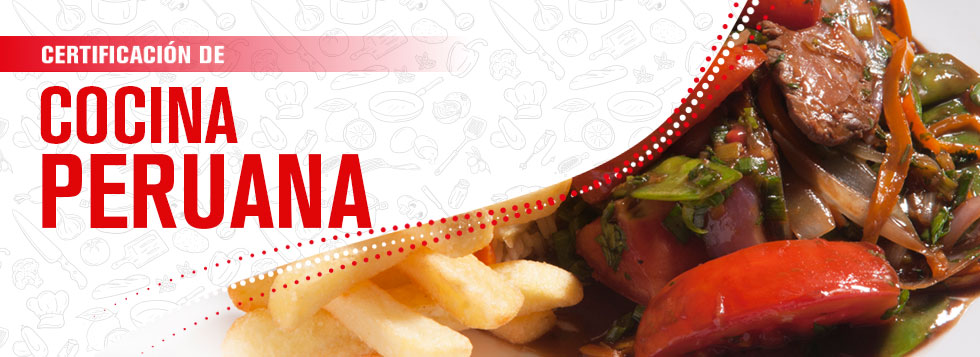
aji de gallina

seco a la norteña
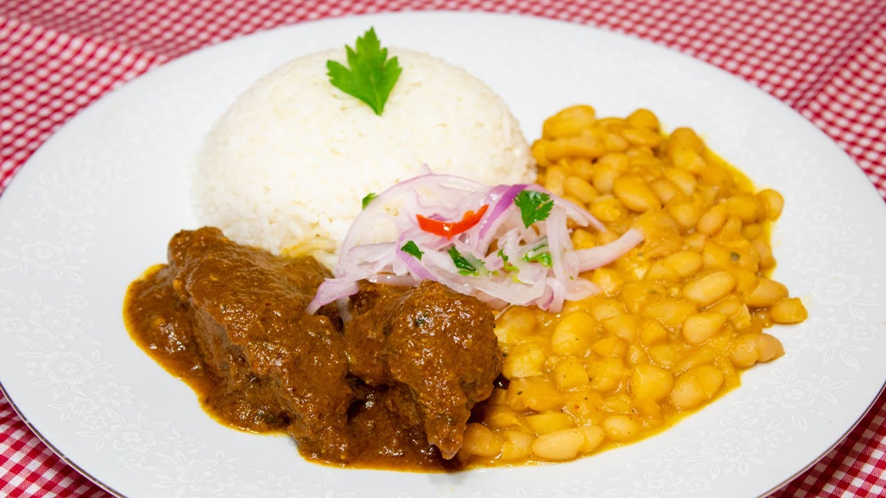arroz con pollo
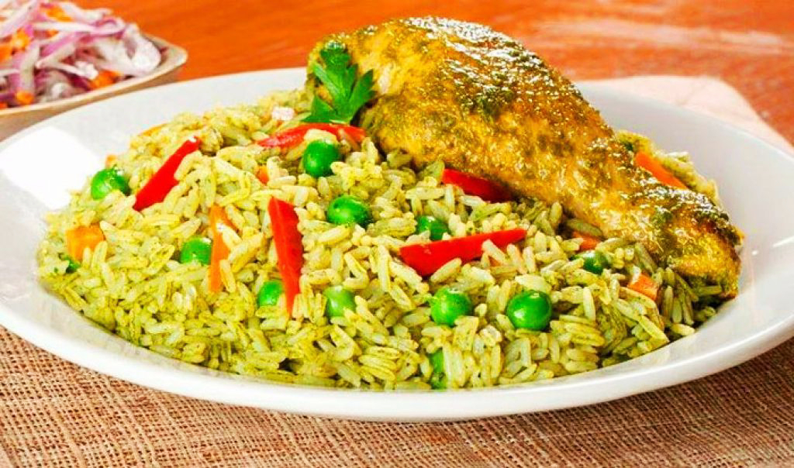ceviche
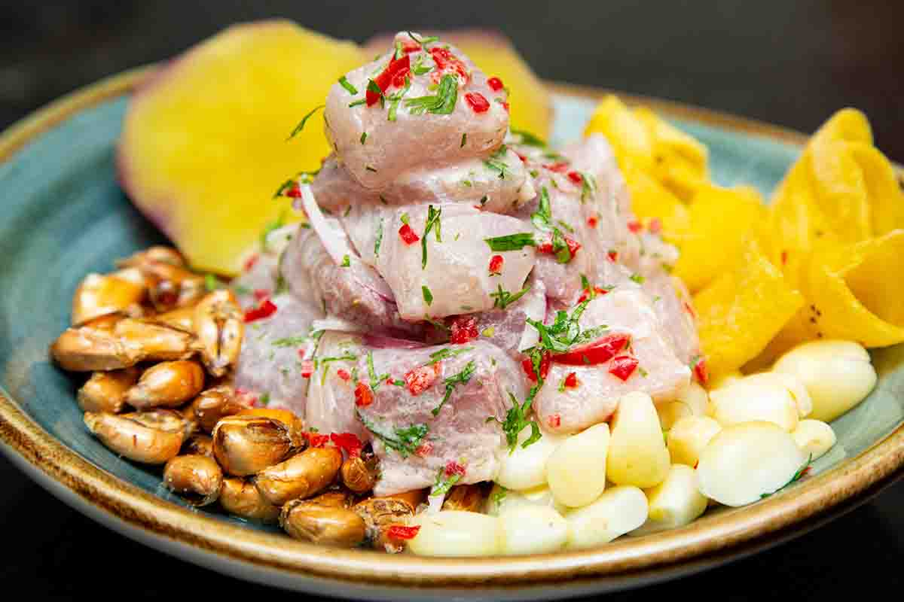lomo saltado
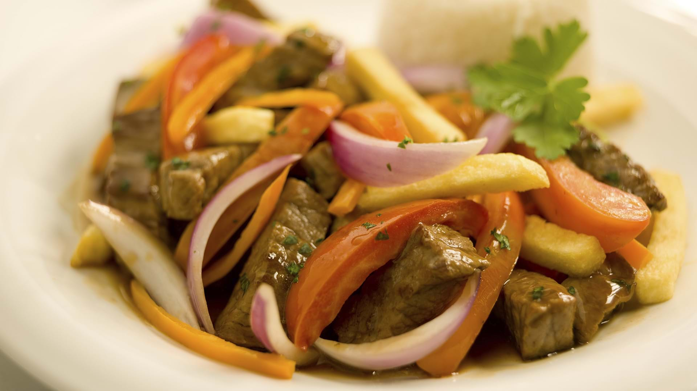papa a la huancaina
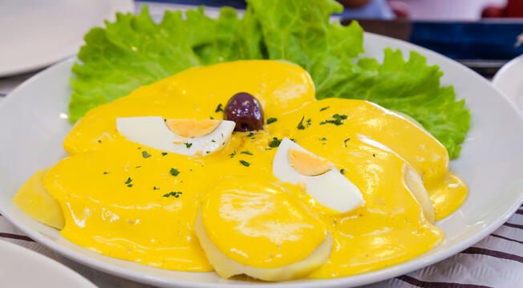
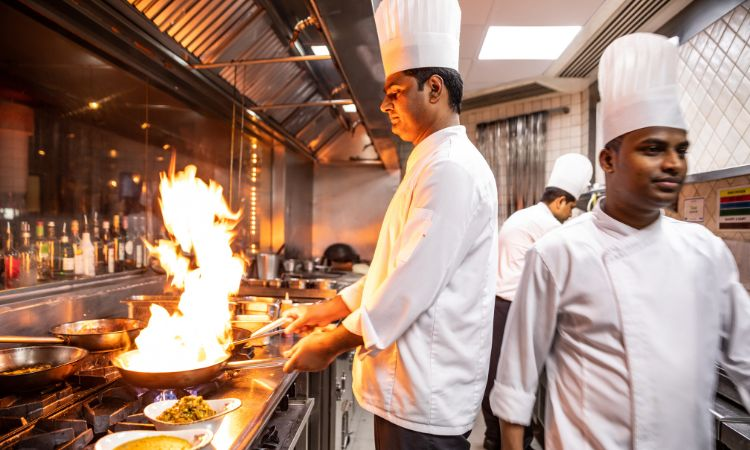
GASTRONOMIA 100% PERUANA
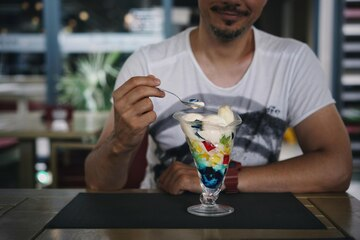
VARIEDAD DE POSTRES A TU MEDIDA
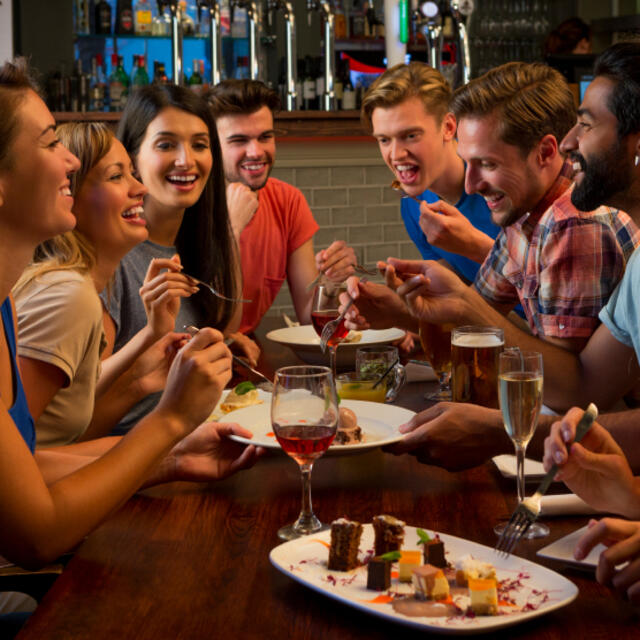
ESPACIO AGRADABLE PARA COMPARTIR CON FAMILIA Y AMIGOS
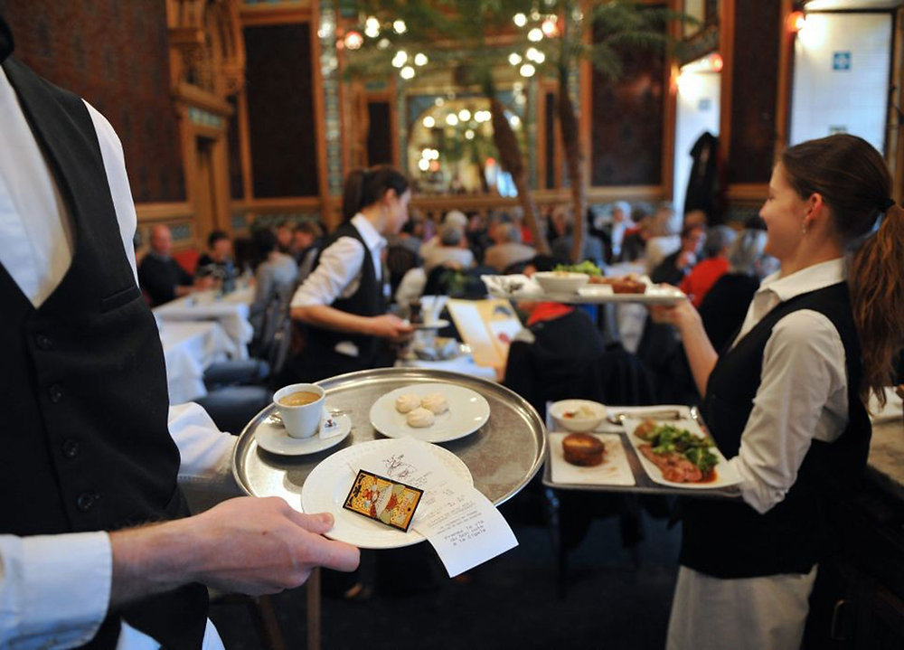
ATENCION AL PUBLICO DE ALTA CALIDAD
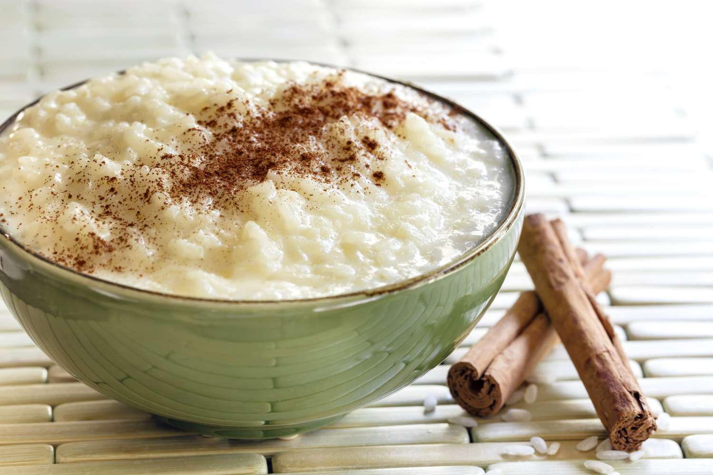
El arroz con leche es un postre típico de la gastronomía de múltiples países hecho cociendo lentamente arroz con leche y azúcar. Se sirve frío o caliente y se le suele espolvorear canela, vainilla o cáscara de limón por encima para aromatizarlo.

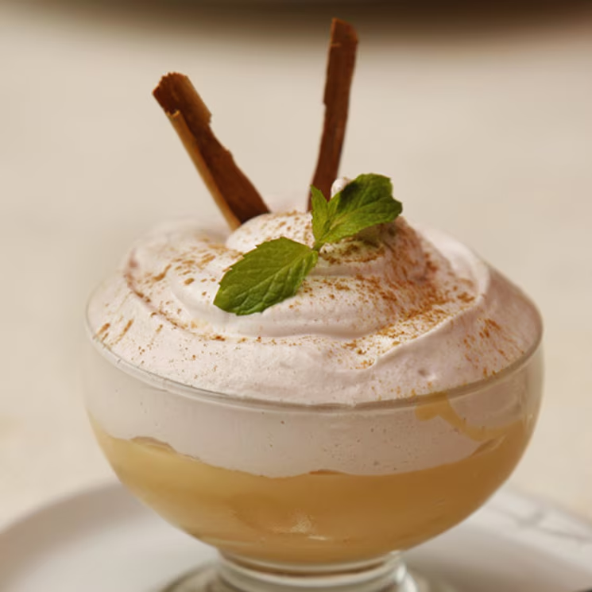
El suspiro de limeña, conocido también como suspiro limeño o suspiro a la limeña, es un postre tradicional de la gastronomía del Perú teniendo su origen en la capital peruana.
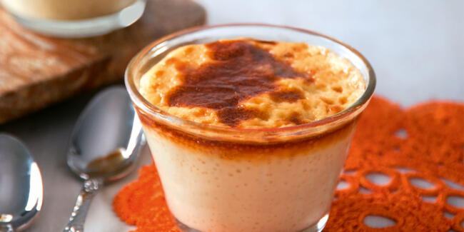
La leche asada es un postre de Perú, Argentina, Colombia y Chile. Es similar al flan porque se elabora con los mismos ingredientes, pero la 'leche asada' tiene una textura menos suave y se hornea directamente, lo que crea una capa tostada en la superficie